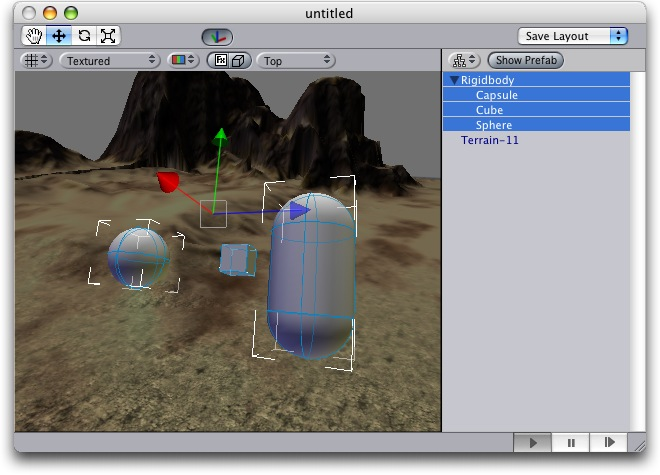
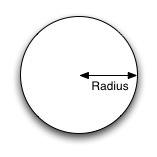
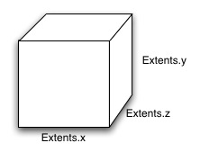
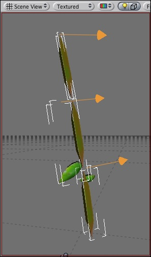

Unity has the next-generation Novodex physics engine built-in. This allows for unique emergent behaviour and is generally very cool.
Basics
To put an object under physics control, simply add a Rigidbody to it. When you do this, the object will be affected by gravity, colliding and hitting other objects in the world.
Collider objects
In order for an object to be considered for collisions, you need to add collider components to them. You use colliders to set up the physical shape of the object.
You also use colliders to make triggers. These execute scripted code whenever objects hit them.
Joints
You use joints to attach physics-controlled objects together. Use them to add hinges to objects and make connect wheels to cars, etc.
Rigidbody
Rigidbody components take control over an object's position - it makes the objects fall down under the influence of gravity, and can calculate how objects will respond to collisions.
Properties
| Property: | Function: |
|---|---|
| The weight of the object. Keep this below 1 for the best stability. | |
| How much the object is slowed down from air resistance. 0 means not at all, whereas infinity makes the object stop immediately. | |
| How fast the object's rotation is slowed down. 0 means not at all, whereas infinity makes the object stop immediately. | |
| If on, the object is affected by gravity. | |
| If on the object will not be driven by the physics engine. This is useful for moving platforms or if you want to animate an rigidbody that has an hinge attached. |
Details
Rigidbodies provide a key ingredient for making your world come alive, simulating lots of physical behaviour and providing lots of quick emergent behaviours.
You move objects under physics control about by adding forces to them, rather than by setting the position of the objects. While cumbersome, this is important in order to ensure the stability of the physics system. Adding forces prevents objects accidentally moving into walls and ensures that the physics system can handle collision response in a sensible manner.
Colliders
In order for objects to collide correctly, they need to have colliders attached. Colliders come in two flavours: Mesh Colliders and Collision Primitives.
Mesh colliders are the easiest to use - simply add a MeshCollider to an object to make othe objects bounce of it. When importing a mesh you can also enable the Has Mesh Collider option in the import settings.
Collision primitives are the basic shapes of spheres, boxes and capsules.
Compound colliders
You add multiple colliders to a rigidbody by adding collision objects as transform children of the rigidbody object. Look at the example below:
|  |
The terrain has a Mesh Collider attached, as you cannot capture its irregular shape using collision primitives. The Rigidbody (shown in the sceneview with the transform handles) has 3 children: the capsule, the cube and the sphere. When playing, the rigidbody lands on the terrain, balancing on the 3 collision primitives.
There is a catch to all this, though: Meshes can't collide with each other, so the typical solution is to use primitives for any objects that move, and meshes for static background objects.
Parenting
When an object is under physics control, it moves semi-independantly of the way its transform parents move. If you move any parents, they will pull the physics object along with them. However, the physically controlled objects still fall down due to gravity and tumble when they hit cliff sides, etc.
Scripting
When objects are under physics control, you mainly control them from scripts. You do this by calling AddForce and AddTorque on the object's rigidbody, rather than setting the position or rotation on its transform.
Animation
For ragdoll effects it is important to be able to switch between a characer being animated or simulated by physics. For this purpose rigidbodies can be marked as kinematic. This means the rigidbody is not affected by collisions or force applied to it. Any motion or rotation has to be set directly by changing the position or rotation of the transform through scripting or by animating it. Kinematic rigidbodies do affect other objects. Joints which are attached to kinematic actors will constrain any other rigid bodies attached to them. Also kinematic rigidbodies will affect other rigidbodies through collisions.
Hints
- The relative masses of two objects determines how they react when they collide.
- Making one object have higher mass than another does not make it fall faster in free fall. Use drag for that.
- A low drag value makes an object seem heavy. A high one makes it seem light. Typical values for drag are between .001 (solid block of metal) and 10 (feather)
Constant Force
The Constant Force component is a quick utility for adding constant forces to a rigidbody.
Properties
| Property: | Function: |
|---|---|
| The vector of a force to be applied in world space. | |
| The vector of a force to be applied in the objects local space. | |
| The vector of a torque, applied in world space. The object will begin spinning around this vector. The longer the vector is, the faster the rotation. | |
| The vector of a torque, applied in local space. The object will begin spinning around this vector. The longer the vector is, the faster the rotation. |
Hints
- To make an object flow upwards, add a constant force with the Force property having a positive Y value.
- To make an object fly forwards, add a constant force with the Relative Force property having a positive Z value.
Sphere Collider
A sphere shaped collider.
Properties
| Property: | Function: |
|---|---|
| Pointer to the PhysicMaterial used how this collider interacts with others. | |
| If enabled, this collider is used for triggering events, and is ignored by the physics system. | |
| The size of the collider. | |
| The position of the collider in the object's local space. |
Details
This is the simplest collider - it is great for falling boulders, etc...
|  |
Colliders attach themselves to a rigidbody either in the same object as themseleves, or above them in the transform hierarchy. This is called attached. If there is no rigidbody above them, they are considered world colliders and will move with the object they are a part of.
World Colliders do not collide with each other. For two objects to collide, one of them must have a Rigid Body attached to it.
Triggers
If a collider is a trigger (has the IsTrigger property checked), whenever it is involved in a collision, a CollisionEvent is sent out to objects attached to it. Triggers do not deflect other physical objects.
Be aware that for two triggers to collide, one of them must be attached to a rigid body. For a trigger to collide with a collider, one of them must be attached to a rigid body.
Hints
-
The colliders do their best to match the scale of an object. If you have a non-uniform scale (a scale which is different in each direction), only the Mesh collider can match completely. You can look at the gizmos in the sceneview to see how Unity has matched.
- If you make an explosion, it can be very effective to add a rigidbody with lots of drag and a sphere collider to it in order to push it out a bit from the wall it hits.
Box Collider
The Box Collider is a basic box-shaped collision primitive.
Properties
| Property: | Function: |
|---|---|
| Pointer to the PhysicMaterial used how this collider interacts with others. | |
| If enabled, this collider is used for triggering events, and is ignored by the physics system. | |
| The size of the collider in the X, Y, Z directions | |
| The position of the collider in the object's local space. |
Details
|  |
Colliders attach themselves to a rigidbody either in the same object as themseleves, or above them in the transform hierarchy. This is called attached. If there is no rigidbody above them, they are considered world colliders and will move with the object they are a part of.
World Colliders do not collide with each other. For two objects to collide, one of them must have a Rigid Body attached to it.
Triggers
If a collider is a trigger (has the IsTrigger property checked), whenever it is involved in a collision, a CollisionEvent is sent out to objects attached to it. Triggers do not deflect other physical objects.
Be aware that for two triggers to collide, one of them must be attached to a rigid body. For a trigger to collide with a collider, one of them must be attached to a rigid body.
Hints
Mesh Collider
The Mesh collider takes 3D geometry and makes it visible to the physics system.
Properties
| Property: | Function: |
|---|---|
| A Pointer to the mesh to use for collisions. |
Details
The Mesh Collider takes the assigned LodMesh and places it its object's position and scales it correctly.
Hints
- Mesh Colliders are great for background gemoetry.
- Since Mesh Colliders can't collide with each other, the recommended solution is to use Mesh Colliders for background objects and primitive colliders for objects under physics control.
- If you attach a Mesh collider to a GameObject with a Mesh assigned, it will autoconfigure to be correct.
Physic Material
The physics material contain all info needed to handle colliding objects in a sensible manner.
To create a physic material select the menu Assets -> Create -> Physic Material. Then drag the physic material from the project pane on a collider in the scene.
Properties
| Property: | Function: |
|---|---|
| The friction used when an object is lying on a surface. Usually a value from 0 to 1. | |
| The friction used when already moving. Usually a value from 0 to 1. | |
| How bouncy is the surface? A value of 0 will not bounce. A value of 1 will bounce without any loss of energy. | |
| How the friction of two colliding objects is combined. | |
| The two friction values are averaged. | |
| The smallest of the two values is used. | |
| The largest of the two values is used. | |
| The friction values are multiplied with each other. | |
| How the bouncyness of two colliding objects is combined. | |
| The two values are averaged. | |
| The smallest of the two values is used. | |
| The largest of the two values is used. | |
| The values are multiplied with each other. | |
| The direction of anisotropy. Anisotropic friction is enabled if the vector3 is not zero. Dynamic Friction 2 and Static Friction 2 will be applied along Friction Direction 2. | |
| If anisotropic friction is enabled, dynamicFriction2 will be applied along Friction Direction 2. | |
| If anisotropic friction is enabled, staticFriction2 will be applied along Friction Direction 2. | |
| If anisotropic friction is enabled, staticFriction2 will be applied along Friction Direction 2. | |
| If use Spring is checked, surface will be springy. | |
| The spring of the surface | |
| The rest position of the spring. | |
| The spring coefficient. A high value will pull the surfaces towards the rest position faster. | |
| The damper coefficient. A high value will dampen the relative movement of the two surfaces. |
Friction is the quantity which prevents surfaces from sliding off each other. This value is critical when trying to stack objects. Friction comes in two forms, dynamic and static. Static friction is used when the object is lying still. It will prevent the object from starting to move. If a large enough force is applied to the object it will start moving. At this point dynamic friction will come into play. Dynamic friction will now attempt to slow down the object while in contact with another.
Hints
- Don't try to use a standard physic material for the main character. Make a customized one and get it perfect.
Hinge Joint
The Hinge Joint groups together 2 rigid bodies, constraining them to move like connected by a Hinge. This joint is great for, well, doors, but can also be used to model chains, etc...
Think of a door. The axis in this case is upwards. The anchor is placed somewhere at the intersection between door and wall.
Properties
| Property: | Function: |
|---|---|
| A reference to another rigid body this hinge connects to. If not set, the hinge connects the object to the world. | |
| The Position of the anchor around which the body swings. The Position is defined in local space. | |
| The Direction of the axis around which the body swings. The Axis is defined in local space. | |
| Spring makes the rigid body attempt to stay in a specific angle compared to its connected body. | |
| The force the object asserts to move into the position. | |
| the higher this value, the more the object will slow down. | |
| Target angle of the spring. The spring pulls towards this angle measured in degrees. | |
| The motor makes the object spin around. | |
| The speed the object tries to attain. | |
| The force applied in order to attain the speed. | |
| If enabled, the motor is never used to brake the spinning, only accelerate it. | |
| Limits are stops that keeps the rotation rigidbody inside some limits | |
| The lowest angle the rotation can go. | |
| The highest angle the rotation can go. | |
| How much the object bounces when it hits the minimum stop. | |
| How much the object bounces when it hits the maximum stop. | |
| The force that needs to be applied for this joint to break. | |
| The torque that needs to be applied for this joint to break. |
Details
|  |
Hints
- Use the Break Force in order to make dynamic damage systems. This is really cool as it allows the player to smash a door by blasting it with a rocket launcher OR running into it with a car.